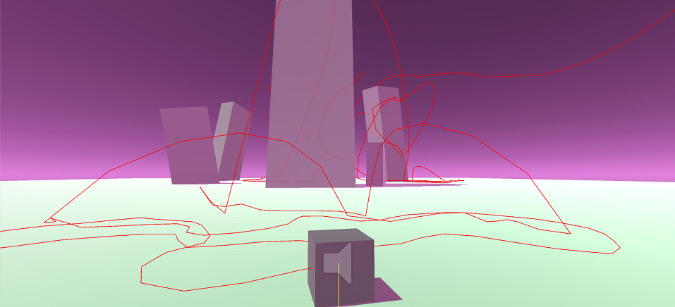
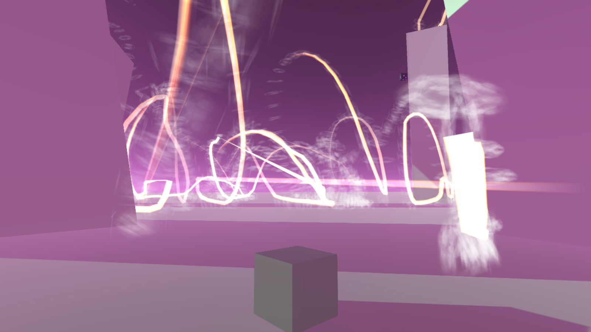

Windows | OSX (Untested) | Linux (Untested)
Controls: Controller compatible: Tap 'A' or 'Spacebar' to jump. Hold to draw path. Hold again to save and end a path. WASD or Joystick to move.
Explore a mysterious land as a jumping cube. See the ghostly trails of previous explorers, and ponder your place in the world.
Converge was created in 48 hours for Charleston's first game jam! My part in the project was programming and audio design. Tim Kaminski worked on the art and level design for the game. This was my first completed Unity 3D game.
We spent about 4.5 hours conceptualizing the game initially, and settled vaguely on the cube jumping mechanics and having a recording feature in the game. A lot of time on my end was spent figuring out how to record player paths and get the trail renderer to load and re-trace those from a saved external file. All the glowing trails you see in the game were recorded and saved by previous players. The sound was pulled from raw data files (windows system .dll files and some .psd photoshop files) imported into Audacity that I filtered, normalized and added reverb to. Tim and I met back up near the end of the jam (final 2 hours) and merged his (awesome) art and my assets together to finish the jam.
 A wip shot of the game in the early stage (first day)This shows off an early path recording. The path is stored as a list of serializable Vector3's. From there, a line is drawn from point to point, which displays all the nuances.
 A wip shot testing the stair-building mechanics.At this stage the paths had the trails properly following and looking nicer. I was testing the stair-building mechanics in which you can build platforms so that you can reach higher ground. There were far too many of them and they would spawn rotated in this version, though it was a visually interesting part of the prototyping process.